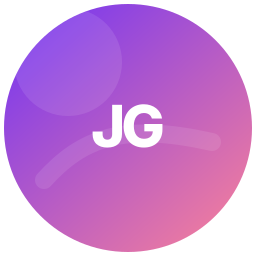
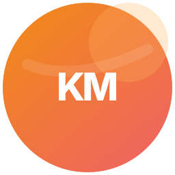
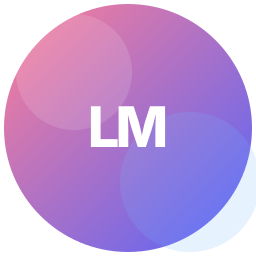
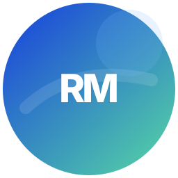

Johan Guzman
Oyente curador
Recomienda cápsulas, comenta con criterio y ayuda a ordenar hallazgos por escena.
Equipo Maracuyá KORΛ
Equipo Maracuyá KORΛ reúne a Johan, Karold, Luna y Renzo alrededor de una aplicación web enfocada en descubrimiento musical emergente.
Equipo Maracuyá KORΛ
El equipo combina perspectivas de curaduría, publicación artística, exploración musical y análisis empresarial para revisar KORΛ desde los roles que la propia aplicación contempla.

Oyente curador
Recomienda cápsulas, comenta con criterio y ayuda a ordenar hallazgos por escena.

Artista local
Publica cápsulas, cuenta la historia de su lanzamiento y gestiona visibilidad autorizada.

Exploradora musical
Descubre artistas emergentes, guarda hallazgos y sigue actividad de la comunidad.

Empresa / talento
Analiza talento emergente con métricas agregadas, permisos y límites de datos.
Proyecto
KORΛ está construido como una aplicación web responsive. La interfaz separa descubrimiento, reproducción, comunidad, publicación, pagos y perfiles, y mantiene los recursos oficiales de marca en su carpeta de branding.